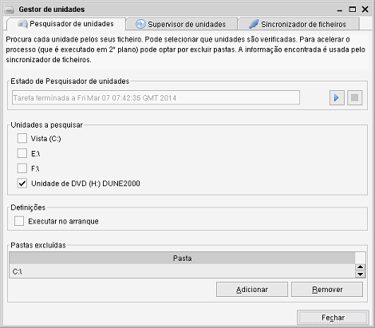
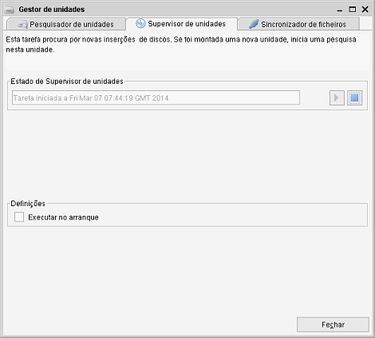
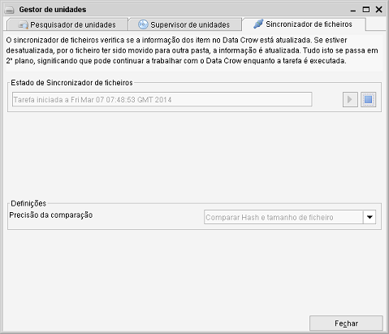

Gestor de unidades
Caminho de menu: Ferramentas > Gestor de unidades
Há módulos que contêm itens representando um ficheiro (ou uma pasta), tais como Álbuns de música ou Imagens.
O Gestor de unidades garante que a informação destes itens se mantém atualizada com a do ficheiro no seu disco, CD
ou outro tipo de unidade. Usando esta ferramenta, não tem de se preocupar em atualizar o Data Crow ao mover um ficheiro para outro
disco ou pasta. O Data Crow atualiza automaticamente o item que representa o ficheiro.

Há três tarefas disponíveis para este objetivo. Todos são executados em segundo plano, significando que pode
continuar a trabalhar com o Data Crow durante a execução das tarefas.
Pesquisador de unidades
O Pesquisador de unidades pesquisa unidades para os ficheiros. Armazena a informação do ficheiro numa pasta temporária do
Data Crow (<pasta do utilizador>/temp). O Sincronizador de ficheiros usa esta informação para executar a sua tarefa.
Unidades a pesquisar
Aqui pode selecionar quais as unidades que quer incluir na pesquisa.
Nota: se não houver unidades visíveis, pode indicar pastas para serem tratadas como unidades.
Leia mais sobre isto aqui.
Pastas excluídas
Se tem a certeza que uma determinada pasta não contém informação relevante para o Data Crow, pode exclui-la
da pesquisa. Para utilizadores Windows, por exemplo, faria sentido excluir a pasta de instalação do Windows.
Supervisor de unidades
Esta é uma tarefa muito simples, que procura por unidades virtuais, montadas ou desmontadas.

Quando uma nova unidade ou disco são montados, é iniciada uma pesquisa de unidade (veja o parágrafo anterior) e o Data Crow
vai utilizar a informação desta pesquisa.
Sincronizador de unidades
Sincroniza a informação dos itens no Data Crow com a informação de ficheiros nas suas unidades.

Quando, por exemplo, um ficheiro foi movido para outra unidade ou pasta, o Sincronizador de ficheiros atualiza automaticamente o item
que representa o ficheiro (um livro, um programa, etc.).
Precisão da comparação
Indica que parte da informação do item é usada para localizar o ficheiro. Por predefinição, a precisão
está definida para o máximo, uma vez que é a forma mais segura de identificar o ficheiro.
Uma vez que a informação (como o hash do ficheiro, informação técnica, gerada e armazenada pelo Data Crow,
para identificar precisamente um ficheiro) pode estar em falta, pode optar por comparar com "Nome de ficheiro" e "Tamanho de ficheiro"
ou somente "Nome de ficheiro".